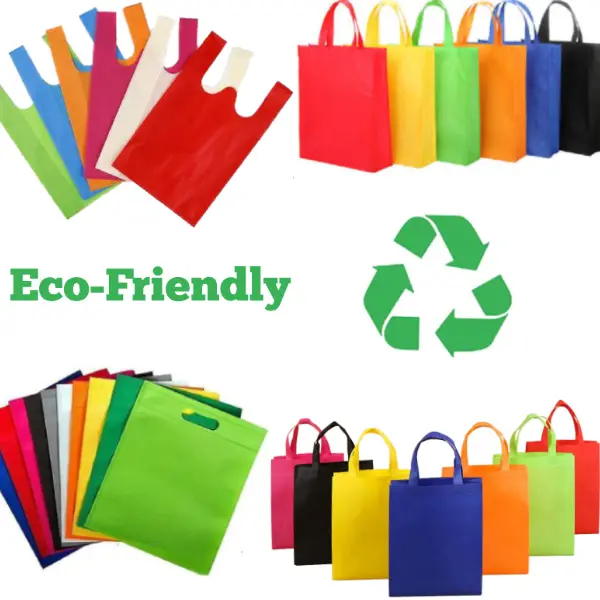

Sustainable fashion refers to clothing that is designed, manufactured, distributed, and used in ways that are environmentally friendly. This includes reducing pollution, conserving water, and ensuring fair labor practices. Choosing eco-conscious materials and upcycling existing garments can greatly reduce the fashion industry's carbon footprint.
